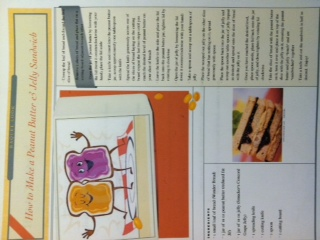

I hate Peanut Butter and Jelly together but here goes:
To construct this sandwich you will need:
2 slices of white wonder bread
1 jar Skippy Peanut Butter (do not use non-fat, ugh)
1 jar Smuckers Grape Jelly
small knife
smooth clean surface, preferably a plate that fits two slices of bread
garbage pail
One: place both slices of bread on plate side by side
Two: using knife, scoop approximately 2 tbls of Skippy and spread evenly over one side of white bread only, making sure to smooth out lumps and cover the bread slice entirely.
Three: using same knife (some people may take offense at this buy I don't like jelly so I don't care) scoop approximately 2 tbls of Smuckers Grape Jelly and spread evenly over one side of the remaining slice of bread; be sure to spread out any lumps and cover the slice of bread entirely.
Four: put down the knife
Five: Before joining, make sure that the bread slices match, i.e. top of one bread slice matching top of the other bread slice so you have symmetry.
Six: Using one hand for each slice of bread, pick up each slice of bread with the peanut butter and jelly sides facing up, keeping the plain unspread part of the slice in your palm, and place the two slices together.
Seven: If you don't have sticky fingers pat yourself on the back.
Eight: Throw sandwich into garbage.
Nine: Forget about the jelly and make the same sandwich using only peanut butter by following steps One through Seven and omitting the jelly.
Ten: Give to [me], mmmmmm.
The first step to making a pbj is to gather your ingredients - you will need a butter knife, a sturdy sliced bread, peanut butter, and an all-fruit jelly. Lay your ingredients out on the counter and put 2 slices of bread on a plate
Use your butter knife to spread the peanut butter evenly on one piece of bread. The peanut butter should be about 1/4" thick all around.
Clean the butter knife then use it to spread jelly on the other piece of bread on the plate - the jelly should be about 1/4" thick all around.
You should now have 2 pieces of bread on your plate - one covered with peanut butter and one with jelly
Now, put the two pieces together with the peanut butter and jelly facing eachother on the inside of sandwich - press together gently
Lay the assembled sandwich flat on your plate and cut the entire sandwich diagonally from the upper right hand corner to the lower left
PBJ Sandwich Instructions:
The instructions will be given in x steps, in ascending numerical order. Follow them closely to make a standard peanut butter and jelly sandwich that anyone would enjoy.
1) Take out the following ingredients from your kitchen and lay them on any flat surface: a jar of peanut butter, your choice of bread, your choice of jelly.
2) Take out the following items from your kitchen and have them ready for use; one flat edged knife, one dinner plate.
3) Slice your bread into two slices if it is not pre-sliced.
4) Open the jar of peanut butter, and using your knife or spoon, spread a 1 cm thick layer on one side of the first piece of bread. When finished, put it aside.
5) Open the jar of jelly, and using your knife, spread a 1 cm thick layer on one side of the second piece of bread.
6) Combine the two slices of bread with the empty sides on the outside, with the peanut butter and jelly facing in.
7) Place the finished sandwich on the plate and serve.
spec for peanut butter and jelly sandwich
take one piece of white bread and put it on a plate.
take a butter knife and scoop peanut butter from the peanut butter jar and spread it with the butter knife onto the white piece of bread. (spread evenly on the bread so that it is covered with peanut butter).
take the same butter knife and scoop jelly from the jelly jar and spread it with the butter knife onto the piece of bread that had already has peanut butter on it. (make sure you spread it on top of the peanut butter- evenly and so the peanut butter is covered with jelly).
take another white piece of bread and put it on top of the piece of bread that already has peanut butter and jelly on it.
cut in half.
enjoy!

1. Gather ingredients including two slices of white bread, jar of peanut butter,
jar of grape jelly, butter knife and plate.
2. Take two pieces of white bread and lay them next to each other, flat on the
plate. Open the peanut butter and jelly jars.
3. Use the butter knife to scoop peanut butter from the jar and spread evenly on
the open face of the white bread. Be sure to cover one side of the bread entirely
with peanut butter. Then take the knife and scoop the jelly from the jar and spread
evenly on top of the peanut butter.
4. There is one piece of bread without any peanut butter or jelly on it. Place that
piece on top of the piece of bread with the PB&J so that the bread shapes match.
5. Push down, pressing the two slices of bread together. Then use the butter
knife to slice the sandwich in half. ENJOY!
PBJ sandwich spec
List of tools and materials needed:
1 small ceramic or paper plate
approximately 5-7 inches in diameter
1 metal or plastic table knife
approximately 6-8 inches in length
1 metal or plastic spoon
approximately 5-7 inches in length
1 jar or container peanut butter (examples are Skippy or Jif)
any size will do as long as the knife (item 2) can fit inside the opening
sell by date must be before today’s date
1 jar or container of grape jelly (an example is Welch’s Grape Jelly)
any size will do as long as the spoon (item 3) can fit inside the opening
sell by date must be before today’s date
1 loaf of sliced bread
loaf must include at least 2 slices approximately 0.5 inches in thickness and approximately 4 inches tall by 4 inches wide
sell by date must be before today’s date
Purchase any of the tools or materials needed for a total of less than $40 USD.
When in possession of all tools and materials, begin steps below.
Steps:
Gather all the tools and materials above and place them on a flat surface such as a table or kitchen counter.
Lay down the plate (item 1 above in the list of tools and materials) in front of you.
Take two slices of bread from the loaf and lay them on the plate.
Open peanut butter jar by grasping the lid and turning it counter-clockwise. Put the lid down.
Insert knife into peanut butter jar opening.
Scoop out just enough peanut butter to cover one slice of bread on its largest side. Scoop out a little at a time to not take too much out of the jar.
As you take peanut butter out, spread it with the knife on the largest flat slide of the bread with smooth strokes left to right.
After one slice of bread has about ¼ of an inch of peanut butter evenly spread, stop. Put the bread back down on the plate, peanut butter side up.
Open the lid of the grape jelly jar via same method as step 4.
Insert spoon into jelly jar opening and scoop out just enough to cover one slice of bread on its largest side. Scoop out a little at a time to not take too much out of the jar.
As you take jelly out, spread it with the back of the spoon on the largest flat slide of the other slice of bread with smooth strokes left to right.
After this other slice of bread has about ¼ of an inch of jelly evenly spread, stop. Place the jelly side down on top of the slice of bread with the peanut butter side up.
Take a bite out of the two pieces of bread you just placed together. Enjoy if you wish.
If you have questions, watch this video first.
http://www.youtube.com/watch?v=GX1EjqXAszM
If you still have questions, call me at: 1-555-555-5555.
How To Make a PB&J Sandwich
o Layout a bag of bread, a jar of jelly and peanut butter
o Untie the bag of bread and pull out 2 adjacent slices of bread
o Lay the 2 slices of bread out on a cutting board, so one is a mirror image of the other
o Unscrew the cap from the jar of jelly and dip the end of a flat knife into the jelly
o Use the knife to cradle a gob of jelly and lay the jelly across the bottom one slice of bread
o Drag the knife across the slice of bread, pulling the jelly beneath the flat blade so as to evenly distribute the jelly throughout that slice of bread
o Wipe the knife clean on the other slice of bread and dip into the peanut butter jar
o Use the flat of the knife to ladle a portion of the peanut butter and lay across the bottom of the 2nd slice of bread
o Use the knife to drag the peanut butter across that second slice of bread, so as to evenly distribute the peanut butter
o Flip one slice of bread, covered with peanut butter or jelly, onto the other slice, which is coated with the other (peanut butter or jelly)
o The peanut butter and jelly will be layered on the inside, while the bread will be aligned to best compliment each other’s shape, with the dry sides out
o Slice the sandwich in half and move the two halves onto a plate
o Screw the caps back onto their respective jars and put back in the fridge or cabinet
o Close the bag of bread, force any excess air out of the bag and twist the wire tie to seal it off
Peanut Butter and Jelly.
Begin with:
- 2 slices of Wonder Bread Classic White Bread, not end slices.
- 1 22oz squeezable bottle of Welch’s Concord Grape Jelly
- 1 Jar of Skippy Creamy Peanut Butter.
- 1 IKEA DRAGON Butter knife
- 1 IKEA DINERA dinner plate
1. Lay the 2 slices of Wonder Bread Classic White Bread face up next to each
other on the center of the IKEA DINERA plate, the bottoms of both slices
touching. One slice will be known as slice one, the other slice two.
2. Open the flip cap of the Welch’s Concord Grape Jelly, then hold the bottle
upside down three inches over slice one.
3. Squeeze the bottle of Welch’s Concord Grape Jelly, so that exactly 2
tablespoons of jelly land on the face up side of slice one.
4. Set the grape jelly to the side, and twist open the jar of Skippy Creamy Peanut
Butter. Set the cap to the side.
5. Hold the IKEA DRAGON butter knife by the non-sharp end, and place the
sharp end into the jar of Skippy Creamy Peanut Butter, until the sharp end is
completely covered by peanut butter.
6. Lift the IKEA DRAGON butter knife from the jar of Skippy Creamy Peanut
Butter bringing with it exactly 1 tablespoon of Peanut butter.
7. Place the peanut butter on the face up side of slice two.
8. Using the IKEA DRAGON butter knife, spread the peanut butter evenly across
the face up side of slice two, so that the entire face of slice two is covered
with a consistent amount of peanut butter. When completed, no peanut
butter should be anywhere but the face of slice two.
9. Then, using the IKEA DRAGON butter knife, spread the jelly evenly across the
face up side of slice one, so that the entire face of slice one is covered with a
consistent amount of jelly. When completed, no jelly should be anywhere but
the face of slice one.
10. Set the IKEA DRAGON butter knife aside.
11. Take slice two and place it on top of slice one, so that the face with peanut
butter of slice two is touching the face of slice one with grape jelly. The
bottoms and tops of both slices should be perfectly aligned.
12. This will further be known as the Sandwich.
13. OPTIONAL: Using the sharp end IKEA DRAGON butter knife, cut the
Sandwich from the upper left corner of the Sandwich to the lower right
corner of the Sandwich, cutting through both slices of bread, peanut butter,
and jelly.